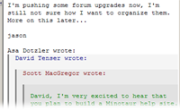

Tips & Tricks
This page contains various tips and tricks for Thunderbird. Most of these tips involve editing of text files on your hard drive and is not recommended if you're not familiar with basic file and folder usage. The tips are divided into four categories and sorted by importance/popularity.
Contents
- Program Appearance
-
Program Behavior
- Check all IMAP folders for new mail
- Don't use the sending progress window
- Password protect the message pane (IMAP only)
- Change the reply header
- Remember news server states in folder pane
- Open mail links in new browser tabs
- Change the Advance to Next Unread Message behavior
- Specify the time to display the new mail notification
Program Appearance
- Use different Quote Level Colors
-

This tip is very useful because it adds different colors of both the text and background of different quote levels in messages. This makes it much easier to follow a long discussion in newsgroups for example, where the level of reply quotes can go very deep.
Of course, you can customize the colors in the code below to your own liking. Add the following code to your userContent.css file:
/* Quote Levels Colors */ blockquote[type=cite] { color: navy !important; background-color: RGB(245,245,245) !important; } blockquote[type=cite] blockquote { color: maroon !important; background-color: RGB(235,235,235) !important; } blockquote[type=cite] blockquote blockquote { color: green !important; background-color: RGB(225,225,225) !important; } blockquote[type=cite] blockquote blockquote blockquote { color: purple !important; background-color: RGB(215,215,215) !important; } blockquote[type=cite] blockquote blockquote blockquote blockquote { color: teal !important; background-color: RGB(205,205,205) !important; } - Make newsgroup names appear expanded, not abbreviated
-
The newsgroup server names appear abbreviated in the folder pane. To display the full name, use the Config Editor to change the value of the preference mail.server.default.abbreviate to false.
If you want the menus to appear native to the Windows Classic appearance, add the following code to your userChrome.css file:
/* Windows Classic (9x/Me/2000) style Menus */ menupopup, popup { border: 2px solid !important; -moz-border-top-colors: ThreeDLightShadow ThreeDHighlight; -moz-border-right-colors: ThreeDDarkShadow ThreeDShadow; -moz-border-bottom-colors: ThreeDDarkShadow ThreeDShadow; -moz-border-left-colors: ThreeDLightShadow ThreeDHighlight; padding: 1px !important; } menubar > menu[disabled="true"] { border: 1px solid transparent !important; } menubar > menu[_moz-menuactive="true"] { border-top: 1px solid ThreeDHighlight !important; border-right: 1px solid ThreeDShadow !important; border-bottom: 1px solid ThreeDShadow !important; border-left: 1px solid ThreeDHighlight !important; background-color: transparent !important; color: MenuText !important; } menubar > menu[_moz-menuactive="true"][open="true"] { border-top: 1px solid ThreeDShadow !important; border-right: 1px solid ThreeDHighlight !important; border-bottom: 1px solid ThreeDHighlight !important; border-left: 1px solid ThreeDShadow !important; }- Use your own background image for the toolbars
In addition to changing themes, you can personalize Thunderbird even more by using your own toolbar background image. Add the following code to your userChrome.css file:
/* Use a background image for the toolbars: (Substitute your image file for background.gif) */ menubar, toolbox, toolbar, .tabbrowser-tabs { background-image: url("background.gif") !important; background-color: none !important; }It's easiest to place the image file in the same location as the userChrome.css file. The image can be of any image format supported by Thunderbird.
Some people like to place all their toolbar items on the same row as the menu. In order to save horizontal space, you can remove top menu items that you don't use. Add the following code to your userChrome.css file:
/* Remove the Go and Help menus (These are just examples. Try changing "Go" to "Edit" or "Message") */ menu[label="Go"], menu[label="Help"] { display: none !important; }- Change Group by Sort Background Color
-
You can change the background color of the Group by Sort titles ("Today", "Yesterday", and so on). Just add the following code to your userChrome.css file:
/* Override of backgroundcolor for Group by Sort "Today, Yesterday and so on ... */ treechildren::-moz-tree-row(dummy) { background-color: #96C0EF !important; margin-bottom: 1px !important; padding-left: 2px !important; } treechildren::-moz-tree-row(dummy, selected) { background-color: -moz-Dialog !important; } treechildren::-moz-tree-row(dummy, selected, focus) { background-color: Highlight !important; } treechildren::-moz-tree-cell-text(dummy) { font-weight: bold !important; } - Make attachment icons small
-
When viewing a message, attached files are shown with fairly large icons. To make the attachment icons small, use the Config Editor to change the value of the preference mailnews.attachments.display.largeView to false.
Program Behavior
- Check all IMAP folders for new mail
-
Thunderbird can download mail from all accounts when you start the program. Just open the Config Editor, search for the preference mail.check_all_imap_folders_for_new, and change its value to true.
- Don't use the sending progress window
-
You can choose to hide the progress window that appears when sending a message by using the Config Editor to change the value of the preference mailnews.show_send_progress to false.
- Change the reply header
-
The standard reply header
[author] wrote:
can be changed to virtually anything, so make your e-mails more personalized. Add and modify the following code to your user.js file, instructions are in the comments:// Change the reply header // 0 - No Reply-Text // 1 - "[Author] wrote:" // 2 - "On [date] [author] wrote:" // 3 - User-defined reply header. Use the prefs below in conjunction with this: user_pref("mailnews.reply_header_type", 3); // If you set 3 for the pref above then you may set the following prefs. user_pref("mailnews.reply_header_authorwrote", "%s said the following"); user_pref("mailnews.reply_header_ondate", "on %s"); user_pref("mailnews.reply_header_separator", " "); user_pref("mailnews.reply_header_colon", ":"); // The end result will be [authorwrote][separator][ondate][colon]
- Password protect the message pane (IMAP only)
-
With this trick, Mozilla Thunderbird will password protect the message list pane (aka the thread pane) by keeping it blank until you log in and enter a password for that account. In the Config Editor, search for the preference mail.password_protect_local_cache, and change its value to true.
- Remember news server states in folder pane
-
In order to prevent stress on news servers, Thunderbird collapses news servers by default at startup so that it doesn't check for new messages. You can enable the persistence of newsgroups by using the Config Editor to change the value of the preference news.persist_server_open_state_in_folderpane to true.
- Open mail links in new windows or tabs
-
If you're using Firefox as your browser, you can have mail links open in new browser tabs (or windows) instead of reusing existing browser windows. To do this, follow the instructions at the Firefox Help site.
- Change the Advance to Next Unread Message behavior
-
When you click on the Next button (or when you select Go > Next > Message or simply when you press N) you normally advance to the next unread message in the current folder. If there are no unread messages left in a folder, Thunderbird will ask if you want to advance to the next folder containing unread messages. You can change this behavior by using the Config Editor to change the value of the preference mailnews.nav_crosses_folders. The values are:
- 0
- Always go to the next folder without prompting
- 1
- Ask before going (the default behaviour)
- 2
- Never go to the next folder with unread messages
- Specify the time to display the new mail notification
-
When new mail arrives, a small notification pops up at the bottom-right edge of the screen. With this tip, you can specify the time to display this alert. Open the Config Editor, search for the preference alerts.totalOpenTime, and change its value to the amount of milliseconds to display new mail alerts. For example, a value of 4000 would be 4 seconds.